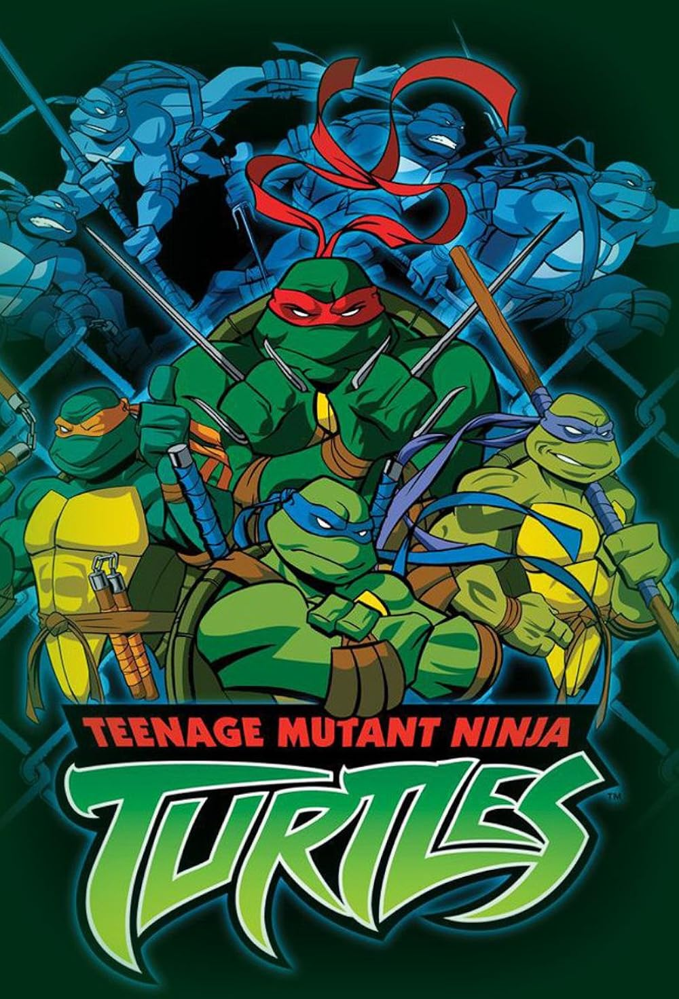

 |
|
| Tiempo de juego | 18m 37s |
| Última actividad | 3/12/2025 20:46:54 |
| Añadido | 21/9/2025 20:46:40 |
| Modificado | 10/12/2025 11:17:14 |
| Estado de finalización | Jugado |
| Librería | Playnite |
| Fuente | |
| Plataforma | PC (Windows) |
| Fecha de lanzamiento | 2003 |
| Puntuación de la Comunidad | |
| Puntuación de la Crítica | |
| Puntuación de usuario | |
| Género | Adventure Hack and slash/Beat 'em up |
| Desarrollador | Konami |
| Editor | Konami |
| Característica | Co-Operative Single Player |
| Enlaces | |
| Tag | Voz y Texto en Inglés |
Después de años de silencio, las Tortugas Ninja volvieron con todo en 2003, no solo con una nueva serie animada más oscura y zarpada, sino con un juegazo de Konami que le hacía justicia. Olvidate de la pizza y el "Cowabunga" de los 80; este juego captura el tono más serio y callejero de la excelente serie del nuevo milenio.
La fórmula es la que conocemos y amamos de los clásicos de Konami, pero llevada a las tres dimensiones con un estilo gráfico "cel-shading" que era un calco de la serie. Es un "beat 'em up" puro y duro: elegís a tu tortuga favorita —Leo, Rafa, Mike o Doni, cada uno con sus movimientos— y salís a limpiar las calles de Nueva York de ninjas del Clan del Pie, Kraangs y mutantes.
Pero la verdadera magia, el ADN de cualquier juego de las Tortugas, estaba en el modo cooperativo. Juntarte con un amigo en el mismo sillón, cada uno con su personaje, y repartir sopapos a dúo era una fiesta. Es un juego diseñado para el quilombo compartido, para gritarle a tu compañero que te cubra la espalda mientras le hacés un combo a un Mouser.
El modo historia te llevaba a través de los arcos argumentales de la primera temporada de la serie, permitiéndote revivir momentos clave y enfrentarte a villanos icónicos como Baxter Stockman, Hun y, por supuesto, el temible Shredder. A medida que avanzabas, podías encontrar cristales para mejorar las estadísticas de tu tortuga, dándole un toque RPG simple pero adictivo.
Es una cápsula del tiempo a una era dorada de los "beat 'em ups" y los juegos cooperativos de sillón. Captura a la perfección la esencia de esa gran serie animada, ofreciendo una experiencia de acción directa, honesta y divertidísima, especialmente cuando se comparte con un amigo.